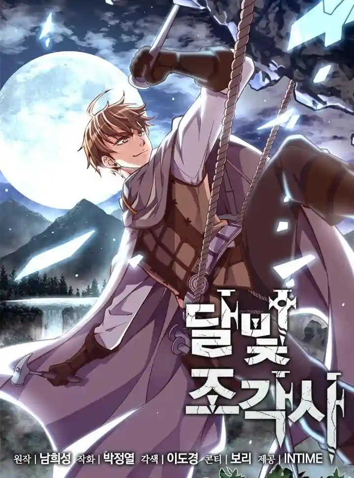
El Legendario Escultor de la Luz Lunar

Omniscient Reader's Viewpoint
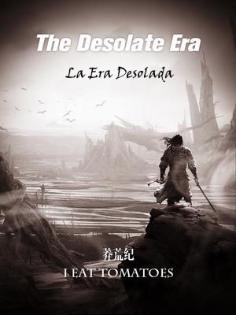
Desolate Era
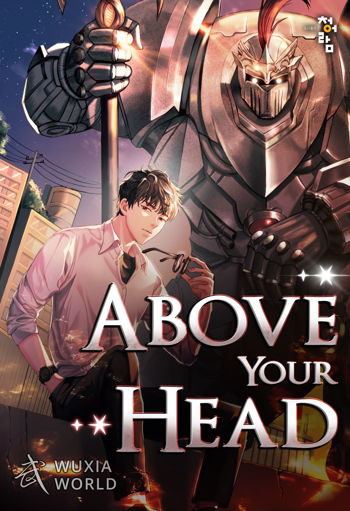
Above Your Head
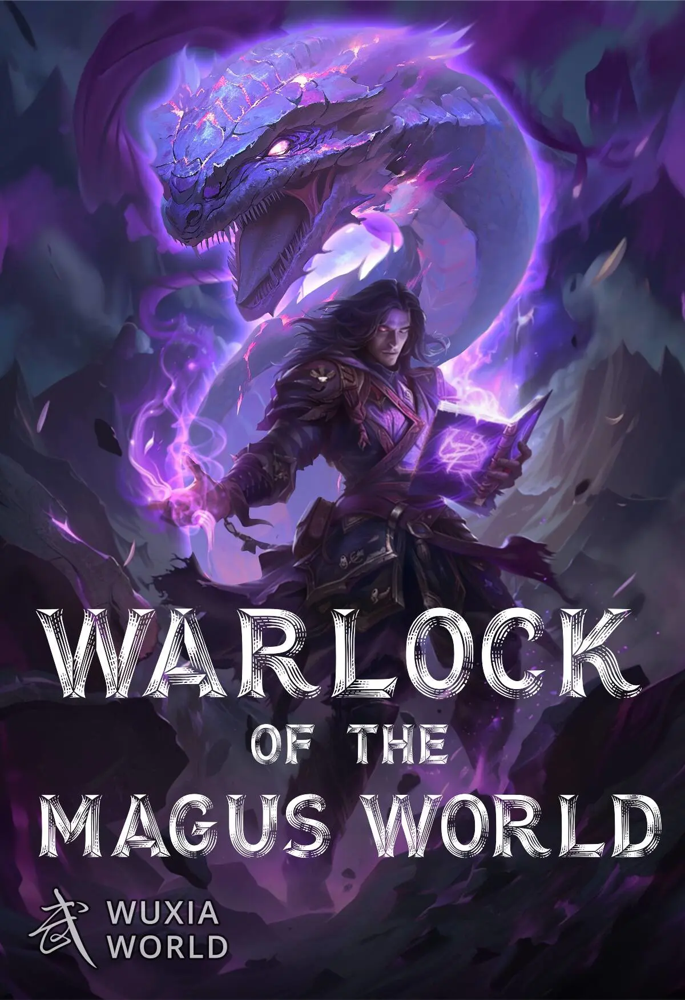
Encuentra tus próximas lecturas favoritas




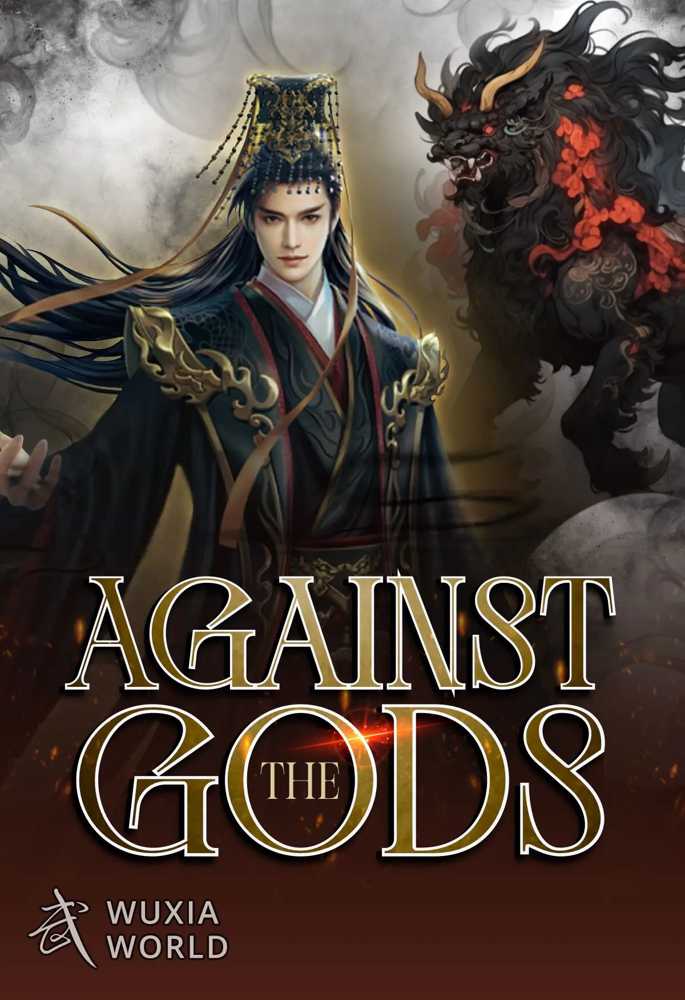
Perseguido por poseer un objeto que desafía al cielo, Yun Che es un joven tanto en esta vida como en la siguiente. Tras arrojarse por un acantilado para vengarse de sus perseguidores, Yun Che reencarna como Xiao Che, un adolescente recientemente envenenado en otro reino. Tan odiado en esta vida como en la anterior, Che debe superar a su clan hostil, su propia incapacidad para cultivar y a su fría prometida.
Leer más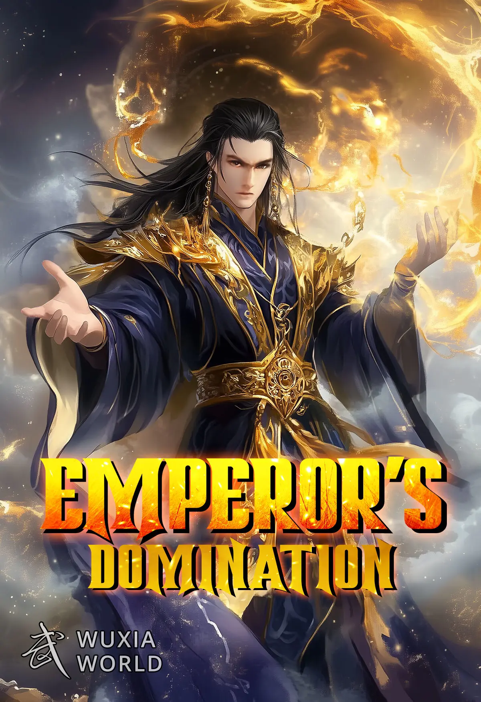
Un chico que estuvo prisionero durante millones de años recuperó su cuerpo mortal. Se convirtió en discípulo de la decadente Secta Antigua del Incienso Purificador, cuyo patriarca solía ser su discípulo. Ahora, devolverá a esta secta a su antigua gloria. Este es su viaje para alcanzar la cima y vengarse de quienes lo aprisionaron. Esta es su historia de reencuentro con viejos amigos y nuevas amistades. Este es su camino atravesando los Nueve Mundos y convirtiéndose en el próximo gobernante de los Cielos.
Leer más
A Will Eternal cuenta la historia de Bai Xiaochun, un joven entrañable pero exasperante motivado principalmente por su miedo a la muerte y su deseo de vivir para siempre, pero que valora profundamente la amistad y la familia.
Leer más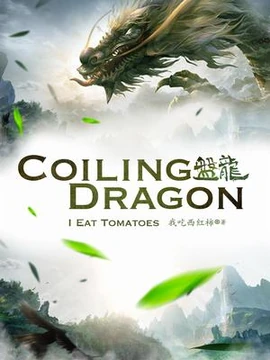
En el continente de Yulan, los imperios surgen y caen. Santos, seres inmortales de poder inimaginable, luchan con hechizos y espadas, dejando a su paso una estela de destrucción. Bestias mágicas dominan las montañas, donde los valientes —o los insensatos— ponen a prueba su fuerza. Incluso los poderosos pueden caer, devorados por los más fuertes. Los fuertes viven como la realeza; los débiles luchan por sobrevivir un día más.
Leer más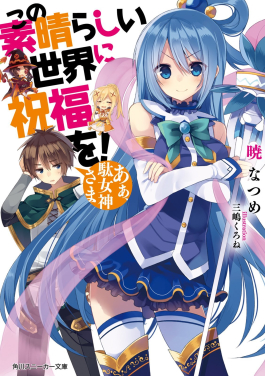
La vida de Kazuma Sato, un joven estudiante japonés aficionado a los videojuegos y solitario, llega a un abrupto final... o al menos eso se suponía. Al abrir los ojos, descubre a una hermosa diosa que le ofrece una oportunidad única en la vida: renacer en un mundo paralelo. El problema es que este mundo es violento y está amenazado por un mal creciente.
Leer más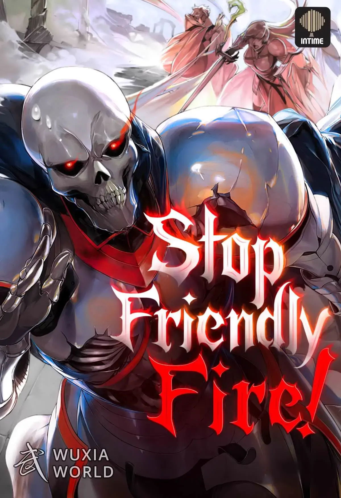
El imperio se ha vuelto la tierra de los No-Muertos debido a que un hechizo salió mal. Dios convocó a héroes de incontables mundos para purificar el Imperio y plantar nueva esperanza. Lee Shin Woo, un terrícola ordinario, también fue convocado; como un no muerto, claro está.
Leer más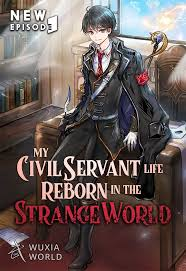
Iba de camino a comprar cerveza para celebrar su ingreso como funcionario público cuando, de repente, Truck-kun lo transportó a otro mundo. Reencarnado como Denburg Blade, hijo de un legendario jefe de una raza de guerreros, capturó demonios a los 8 años y un dragón a los 12. Sometido al entrenamiento espartano de su musculoso padre, su vida diaria era inhumana.
Leer más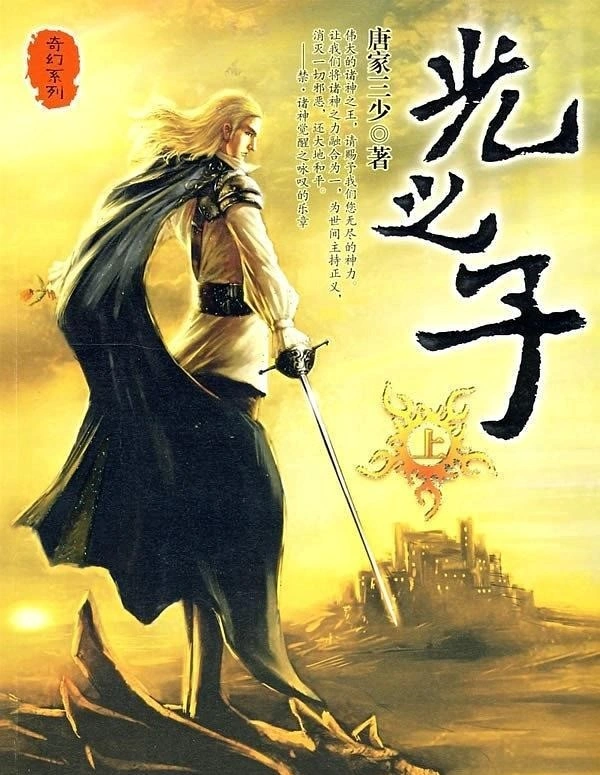
Zhang Gong decide aprender magia de luz, una magia que despierta poco interés, y finalmente se convierte en el legendario Gran Magister. Mientras intenta acabar con la división entre el este y el oeste del continente para unir a todas las razas, se convierte en el Hijo de la Luz de cada una de ellas.
Leer más